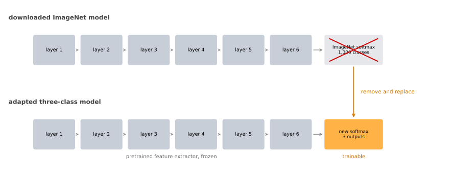
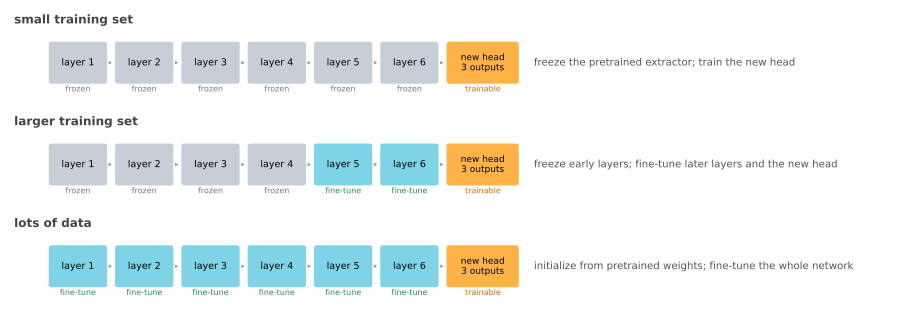
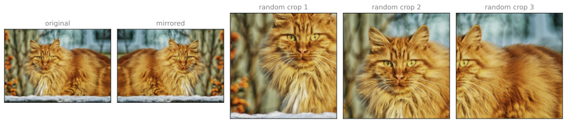
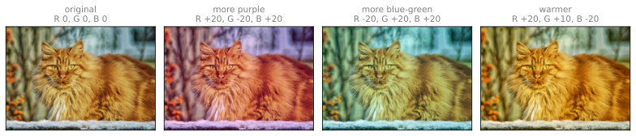
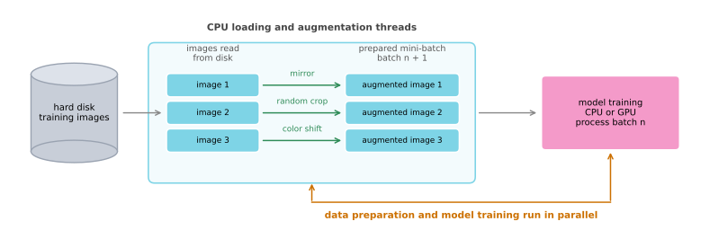
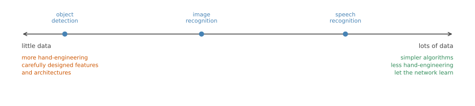
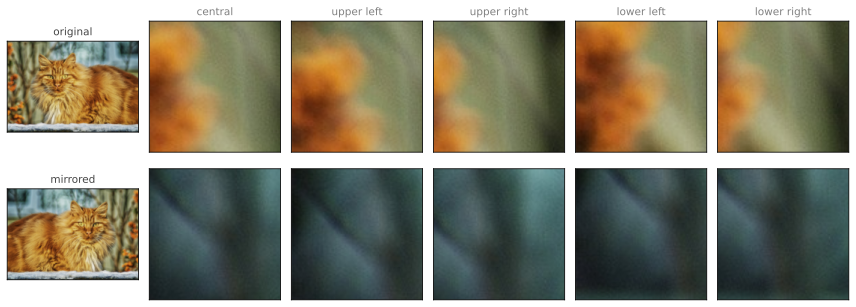

Practical Advice for Using ConvNets
deep-learning
convolutional-neural-networks
computer-vision
transfer-learning
data-augmentation
Starting from open source implementations, transferring pretrained weights to a small dataset, augmenting images, and what the state of computer vision implies.
Several highly effective convolutional architectures have been covered so far. What follows is practical advice on how to actually use them, starting with the simplest and most useful habit of all, which is not writing them yourself.
Using Open Source Implementations
Many of these neural networks are difficult or finicky to replicate. A lot of the details are in the tuning of the hyperparameters, things such as learning rate decay, and those details make a real difference to the performance. It is sometimes difficult even for a deep learning PhD student at a top university to replicate someone else’s published work from reading the paper alone.
Fortunately, a lot of deep learning researchers routinely open source their work on the Internet, often on GitHub. If you see a research paper whose results you would like to build on, one of the first things worth doing is looking online for an open source implementation. If you can get the authors’ own implementation, you can usually get going much faster than by reimplementing from scratch, although reimplementing from scratch is a good exercise in its own right.
Cloning a Repository
Suppose you are interested in residual networks and want to use one. Searching GitHub for ResNet returns many different implementations. The first result is often the repository from the original authors of the ResNet paper.
Scrolling down a GitHub page gives you text describing the work and that particular implementation. It also tells you the license. Many of these repositories are released under the MIT License, which is one of the more permissive open source licenses. Click through and read the license, because it governs what you are allowed to do with the code.
Downloading the code takes one command. Copy the repository URL from the page, then run
git clone https://github.com/<user>/<repository>.gitIn a couple of seconds the repository is on your local disk. Going into the directory shows you the files that specify the network. In the original ResNet repository these are .prototxt files, one very long file specifying the detailed configuration of the ResNet with 101 layers. That particular implementation uses the Caffe framework, but implementations of the same architecture in other frameworks are usually available as well.
Typical Workflow
For someone developing a computer vision application, a very common workflow looks like this.
- Pick an architecture that you like, maybe one of the ones covered in these notes, or one you heard about from a colleague or from the literature.
- Look for an open source implementation and download it from GitHub.
- Start building from there.
One extra advantage is that these networks can take a long time to train, and someone else may have used multiple GPUs and a very large dataset to pretrain one. That opens the door to transfer learning, which is the subject of the next section.
If you are a computer vision researcher implementing these things from scratch, your workflow will of course be different, and in that case do contribute your work back to the open source community. But because so many vision researchers have already done the work of implementing these architectures, starting from an open source implementation is usually a faster way to get going on a new project.
Review Questions
1. Why is a published paper often not enough to reproduce a result?
TipAnswer
Because much of what makes the network perform well lives in details that papers describe only loosely, such as the exact hyperparameter tuning, learning rate decay schedules, and other training choices. Those details make a real difference to the final numbers, which is why even experienced researchers find someone else’s polished result hard to reproduce from the paper alone.
1. What should you check on a repository before building on its code?
TipAnswer
The license. It states what you are permitted to do with the code, and the terms vary. The MIT License, common in this space, is one of the more permissive ones, but you should click through and read the terms rather than assuming.
Transfer Learning
If you are building a computer vision application, rather than training the weights from scratch from random initialization, you often make much faster progress by downloading weights that someone else has already trained on that architecture, and transferring them to the task you care about.
The computer vision research community has been good about posting datasets online. ImageNet, MS COCO, and PASCAL VOC are names of datasets that many researchers have trained their algorithms on. Training on them sometimes takes several weeks and many GPUs. The fact that someone else has already gone through that expensive search process means you can download open source weights that took someone else weeks or months to produce, and use them as a very good initialization for your own network.
Small Training Set
Take an example. Suppose you are building a cat classifier to recognize your own pets. According to the Internet, Tigger is a common cat name and Misty is another. Say your two cats are called Tigger and Misty. Assuming each image receives one label, you then have a classification problem with three classes, since a picture is either Tigger, or Misty, or neither.
You probably do not have many pictures of Tigger or Misty, so your training set is small. What can you do?
Download an open source implementation of a neural network, and download not just the code but also the weights. Many available networks have been trained on the 1,000-class ImageNet classification benchmark, so the network ends in a 1,000-way softmax output layer.
Get rid of that softmax layer and create your own softmax unit that outputs Tigger, Misty, or neither. Then think of all the layers before it as frozen. You freeze the parameters in all of those layers and train only the parameters associated with your own softmax layer, the one with three outputs.
By using someone else’s pretrained weights you can get pretty good performance this way even with a small dataset. Deep learning frameworks support this mode of operation. Depending on the framework you might set something like trainable = 0 on the early layers, or freeze = 1, or simply tell it not to train those weights. The mechanism differs, but every major framework lets you specify whether or not the weights of a particular layer get trained.
Precomputing Frozen Activations
Here is a neat trick that helps for some implementations. Because all of the early layers are frozen, they form a fixed function. It does not change, since you are not training it. That function takes the input image \(x\) and maps it to a set of activations at the layer where your own softmax begins.
Since the function is fixed, you can precompute it. Run every example in your training set through the frozen part once, and save the resulting feature vectors to disk. What you are then doing is training a shallow softmax model from those saved feature vectors to a prediction.
The advantage is that you no longer recompute those activations on every epoch, or every pass through the training set. You pay the cost once instead of once per epoch.
More Data, Fewer Frozen Layers
Everything above assumed a small training set. What if you have more?
One rule of thumb is that with a larger labeled dataset, so if you have a great many pictures of Tigger, Misty, and neither, you freeze fewer layers. You might freeze only the earliest layers and train the later ones. The output layer still has to be your own, since your classes differ from the thousand that the downloaded network was trained on.
For the layers you decide to train, there are a couple of ways to proceed. You can take the weights of the last few layers as an initialization and run gradient descent from there. Or you can discard those last few layers entirely and use your own new hidden units with your own final softmax output. Either is worth trying.
The pattern is that the more data you have, the fewer layers you freeze and the more layers you train on top. The reason is that with enough data you can afford to train more than a single softmax unit. You have enough to train a network of some size, the one made from the last few layers of the network you end up using.
Finally, if you have a lot of data, you can take the open source network and its weights and use the whole thing purely as an initialization, then train the entire network. Again, if the downloaded network had a thousand-way softmax and you need three outputs, the output layer is still yours. In this extreme case the downloaded weights simply replace random initialization, and gradient descent then updates all the weights in all the layers.
In practice, because the open datasets on the Internet are so large, and the downloadable weights encode weeks of training on far more data than you have, many computer vision applications simply do better by starting from someone else’s open source weights. Of all the areas where deep learning is applied, computer vision is the one where transfer learning is something you should almost always do, unless you have an exceptionally large dataset and a very large computation budget to train everything from scratch yourself.

Review Questions
1. You have 40 photographs in total across your three classes. Which layers do you train?
TipAnswer
Only your own softmax layer. With a training set that small there is not enough signal to train more than a shallow model without destroying what the downloaded weights already encode. Freeze every layer before your softmax and treat them as a fixed feature extractor.
1. Why does the precomputing trick only work on the frozen part of the network?
TipAnswer
Because precomputing assumes the mapping from image to activations never changes. That is true exactly when the layers producing those activations are frozen. As soon as a layer is being trained, its weights change after every update, so the activations it produces change too and a saved copy would be stale after the first step.
1. You have collected thousands of labeled photographs. What changes?
TipAnswer
You freeze fewer layers and train more of them. With that much data you can train a network of real size rather than a single softmax unit, so you might keep only the earliest layers frozen. With a lot of data you can go further and train the entire network, using the downloaded weights purely as an initialization in place of random initialization.
1. You have a small training set and want to build a classification model. Which transfer learning strategy would you use?
Use an open source network trained on a larger dataset, and use its weights as the starting point for training the whole network.
Use an open source network trained on a larger dataset, freeze its layers, and re-train the softmax layer.
Use an open source network trained on a larger dataset, freeze the softmax layer, and re-train the rest of the layers.
It is always better to train a network from a random initialization, to prevent bias in the model.
TipAnswer
b. With a small training set there is only enough signal to fit a shallow model, so the downloaded layers are kept fixed as a feature extractor and the only thing trained is your own softmax layer over your own classes. Option a is the strategy for a large training set, since training every layer on a few dozen images would destroy what those weights already encode. Option c is backwards, because the softmax layer is the one part that cannot be reused at all, as its outputs are the original 1000 classes rather than yours. Option d gives up the weeks of training someone else has already paid for, and random initialization is not a defense against bias.
Data Augmentation
Most computer vision tasks could use more data. Data augmentation is one of the techniques used most often to improve the performance of computer vision systems.
Computer vision is a complicated task. You feed in an image, all of those pixels, and have to figure out what is in the picture, which seems to require learning a fairly complicated function. In practice, on almost all computer vision tasks, having more data helps. This is unlike some other domains, where you sometimes have enough data and do not feel as much pressure to get more. For the majority of computer vision problems, it feels like we cannot get enough data.
So when you are training a computer vision model, data augmentation usually helps. That is true whether you are using transfer learning from someone else’s pretrained weights or training something yourself from scratch.
Mirroring and Random Cropping
Perhaps the simplest augmentation method is mirroring on the vertical axis. Take an example from your training set and flip it horizontally. For most computer vision tasks, if the left picture is a cat then the mirrored one is also a cat. Whenever the mirroring operation preserves whatever you are trying to recognize, it is a good augmentation to use.
Another commonly used technique is random cropping. Given an image, pick a few random crops of it, and feed those different crops in as different training examples.

Random cropping is not a perfect augmentation, because you might randomly end up with a crop that does not look much like a cat at all. In practice it is worthwhile so long as your random crops are reasonably large subsets of the actual image.
Mirroring and random cropping are the two used most often. You could also use rotation, shearing of the image, and various forms of local warping, provided the transformation preserves the label. In practice these methods tend to be used less often, partly because they are more complex to configure well.
Color Shifting
The second type of augmentation used commonly is color shifting. Given a picture, add different distortions to the R, G, and B channels.
Adding to the red and blue channels while subtracting from the green channel makes the whole image more purple, since red and blue make purple, and that gives you a distorted image for the training set. In the examples below, every channel offset stays between \(-20\) and \(+20\) on the 0 to 255 pixel scale. In practice you would draw the values for R, G, and B from a probability distribution.

The motivation is that if the sunlight was a bit yellow, or the indoor illumination was a bit more yellow, that easily changes the colors in an image, while the identity of the cat, the label \(y\), stays exactly the same. Introducing these color distortions makes your learning algorithm more robust to changes in the colors of its images.
NotePCA color augmentation
There are different ways to sample the values added to R, G, and B. One implementation uses an algorithm called Principal Component Analysis, and this variant is sometimes called PCA color augmentation. The details are given in the AlexNet paper, Krizhevsky, Sutskever, and Hinton (2012).
The rough idea is that PCA identifies correlated directions of color variation and perturbs the image along those directions. If an image is mainly purple, its red and blue channels often vary together more than its green channel, so the method tends to change red and blue together. This produces more plausible lighting and color changes than perturbing the three channels independently without regard to their correlations. If none of this is clear, it is safe to skip. Open source implementations of PCA color augmentation exist, and you can simply use one.
Implementing Augmentation During Training
Suppose your training data is stored on a hard disk. If you have a small training set you can do almost anything and be fine. For a large training set, here is how people often implement it.
One CPU thread is constantly loading images off the hard disk, giving a stream of images coming in. That thread, or several such threads, implements the distortions on each image, the random cropping or the color shifting or the mirroring, so that each image comes out as some distorted version of itself. Those distorted images are collected into a mini-batch, or really into many mini-batches, of data.
That data is then passed constantly to some other thread or some other process which does the training, either on the CPU or, increasingly, on the GPU if you have a large network to train. The loading and distorting on one side and the training on the other can run in parallel.

Like other parts of training a deep network, the augmentation process has its own hyperparameters, such as how much color shifting to apply and exactly what parameters to use for the random cropping. As elsewhere in computer vision, a good place to start is someone else’s open source implementation of how they did their data augmentation. If you want to capture more invariances than their implementation does, it is reasonable to tune those hyperparameters yourself.
Review Questions
1. Mirroring works for cats. When would mirroring be the wrong augmentation to use?
TipAnswer
Whenever the flip does not preserve the label. The rule stated above is that mirroring is a good augmentation when the operation preserves whatever you are trying to recognize. A mirrored cat is still a cat, so the label survives. If flipping an image changed what it should be labeled, then the flipped image would be a wrongly labeled training example rather than a useful new one.
1. Why must random crops be reasonably large subsets of the original image?
TipAnswer
Because a small crop can miss the subject entirely and end up showing something that does not look like the label at all. Random cropping is not a perfect augmentation for exactly this reason. Keeping crops large makes it likely that the object stays in the frame, so the crop remains a correctly labeled example.
1. Why is the augmentation work usually placed on separate CPU threads from the training?
TipAnswer
So that the two can run in parallel. Loading images off disk and distorting them is work that does not need the trainer to wait for it, and training on a large network is often done on the GPU. Having one thread or several build the next mini-batches while another thread or process trains on the current one keeps both busy.
State of Computer Vision
Deep learning has been applied successfully to computer vision, natural language processing, speech recognition, online advertising, logistics, and many other problems. A few things are unique about the application of deep learning to computer vision, and knowing them helps you navigate the literature and the set of ideas out there.
Data Versus Hand-Engineering
Think of most machine learning problems as falling somewhere on a spectrum, from having relatively little data at one end to having lots of data at the other.
Speech recognition today has a decent amount of data relative to the complexity of the problem. Image recognition has reasonably large datasets, over a million images, and yet because recognizing an image means looking at all those pixels and figuring out what is there, it still feels like more data would help. Object detection has even less. Object detection means looking at a picture and putting bounding boxes around the objects, telling you where in the picture each one is, rather than only saying whether a cat is present. Labeling bounding boxes is more expensive than labeling whole images, so there tends to be less data for detection than for recognition.

Looking across a broad spectrum of machine learning problems, on average, when you have a lot of data people get away with simpler algorithms and less hand-engineering. There is less need to carefully design features for the problem. Instead you can use a large neural network, even one with a simpler architecture, and let it learn whatever it needs to learn. In contrast, when you do not have much data, on average you see people doing more hand-engineering.
A learning algorithm has two sources of knowledge. The first is the labeled data, the \((x, y)\) pairs you use for supervised learning. The second is hand-engineering, and there are many ways to hand-engineer a system, from carefully designing the features, to carefully designing the network architecture, to other components of the system. When you do not have much labeled data, you have to lean more on hand-engineering.
Computer vision is trying to learn a really complex function, and it often feels like there is not enough data for it. Even though datasets keep getting bigger, they are often still smaller than what the problem seems to want. This is why computer vision has relied more on hand-engineering, historically and even today, and also why the field has developed rather complex network architectures. In the absence of more data, the way to get good performance is to spend more time architecting the network.
None of this is meant to be derogatory about hand-engineering. When you do not have enough data, hand-engineering is a difficult and skillful task that requires a lot of insight, and someone who is insightful at it will get better performance and makes a great contribution to a project. It is when you do have lots of data that the time is better spent building up the learning system instead.
The amount of data available for computer vision tasks has increased dramatically in recent years, and that has reduced how much hand-engineering gets done. But there is still a lot of hand-engineering of network architectures in computer vision, which is why you see more complicated architectural choices there than in many other disciplines. And because detection datasets are usually smaller than recognition datasets, detection algorithms tend to be even more complex and to have even more specialized components.
One thing that helps a lot when you have little data is transfer learning. For the Tigger and Misty problem above, with so little data, transfer learning would help a great deal.
Tips for Doing Well on Benchmarks
If you read the computer vision literature, you will find that people are enthusiastic about doing well on standardized benchmark datasets and about winning competitions. Doing well on a benchmark makes a paper easier to publish, so a lot of attention goes there. The positive side is that it helps the whole community figure out which algorithms are most effective. But you will also see papers do things that help on a benchmark yet would never be used in a production system that you actually deploy.
Here are two such techniques. Both are worth recognizing when you meet them in a paper, and neither is typically used when serving real customers.
Ensembling. After you have figured out what network you want, train several networks independently and average their outputs. Initialize say three, five, or seven networks randomly, train all of them, and then average their predictions. It is important to average their outputs \(\hat{y}\). Do not average their weights, because that does not work.
Ensembling might buy you 1 or 2 percent, which really can help win a competition. But testing on each image means running that image through anywhere from three to fifteen different networks, which is quite typical, so it slows your running time down by a factor of three to fifteen or more. It also means keeping all of those networks around, which takes a lot more memory.
Multi-crop at test time. Multi-crop is data augmentation applied to your test image rather than to your training images. There is a technique called 10-crop. Take the central crop and run it through the classifier. Then take the crop at the upper left corner, the upper right, the lower left, and the lower right, and run each of those through as well. Then do the same thing with the mirrored image. The central crop and the four corner crops, on the original and on the mirror, add up to ten crops, hence the name. You then average the results of those ten.

If you have the computational budget you could do this, and you may not need as many as ten crops, since a few might do. Multi-crop might give you slightly better performance in a production system, but it is another technique used far more for benchmarks than in deployed systems. At least with multi-crop you keep only one network around, so it does not consume as much memory as ensembling, though it still slows your run time down quite a bit.
Advice for Building Practical Systems
Because so many computer vision problems are in the small data regime, others have done a lot of hand-engineering of the network architectures. A network that works well on one vision problem often, perhaps surprisingly, works well on other vision problems too.
So to build a practical system you often do well by starting from someone else’s architecture. Use an open source implementation if you can, because it may already have the finicky details worked out, things like the learning rate and its schedule and the other hyperparameters. And someone else may have spent weeks training that model on half a dozen GPUs over a million images. Using their pretrained model and fine tuning it on your own dataset gets you going on an application much faster.
Of course, if you have the compute resources and the inclination, nothing stops you from training your own networks from scratch. If you want to invent your own computer vision algorithm, that is what you will have to do.
Review Questions
1. Why does having less data push a field toward more hand-engineering?
TipAnswer
Because a learning algorithm has two sources of knowledge, the labeled data and the hand-engineering, and when one is scarce you lean on the other. With lots of data a large network can learn more of the function itself, so less hand-engineering is often needed. With little data there is not enough signal for that, so more of the insight has to be supplied by hand, through designed features or a carefully architected network.
1. Ensembling averages the predictions of several networks. Why not average their weights instead, which would leave you with only one network to store and run?
TipAnswer
Because naively averaging the weights of independently initialized networks generally does not preserve their learned functions. The networks can represent similar functions with different hidden-unit orderings and can end up in different regions of parameter space, so a weight-by-weight average need not be a useful network. What this ensemble combines is the predictions \(\hat{y}\), which are directly comparable across the models.
1. Both ensembling and 10-crop cost you at test time. Which cost does each one impose?
TipAnswer
Ensembling costs both memory and run time, since all of the networks have to be kept around and each test image is passed through every one of them, slowing inference by a factor of three to fifteen or more. Multi-crop costs mainly run time, because only one network is stored but each test image is run through it ten times. That is why neither is typically used to serve real customers, and why multi-crop is the less painful of the two.
1. Why is transfer learning specifically emphasized for computer vision rather than for deep learning in general?
TipAnswer
Because many computer vision tasks are data-constrained relative to the complexity of the functions they must learn, while weights trained on enormous public image datasets are widely available. Those weights encode features learned through weeks of training, so they often provide a much better starting point than random initialization on a smaller task-specific dataset. Training from scratch becomes more reasonable when you have an exceptionally large dataset and a very large computation budget of your own.
References
- Krizhevsky, A., Sutskever, I., & Hinton, G. E. (2012). ImageNet classification with deep convolutional neural networks. In F. Pereira, C. J. Burges, L. Bottou, & K. Weinberger (Eds.), Advances in Neural Information Processing Systems (Vol. 25). Curran Associates. PDF